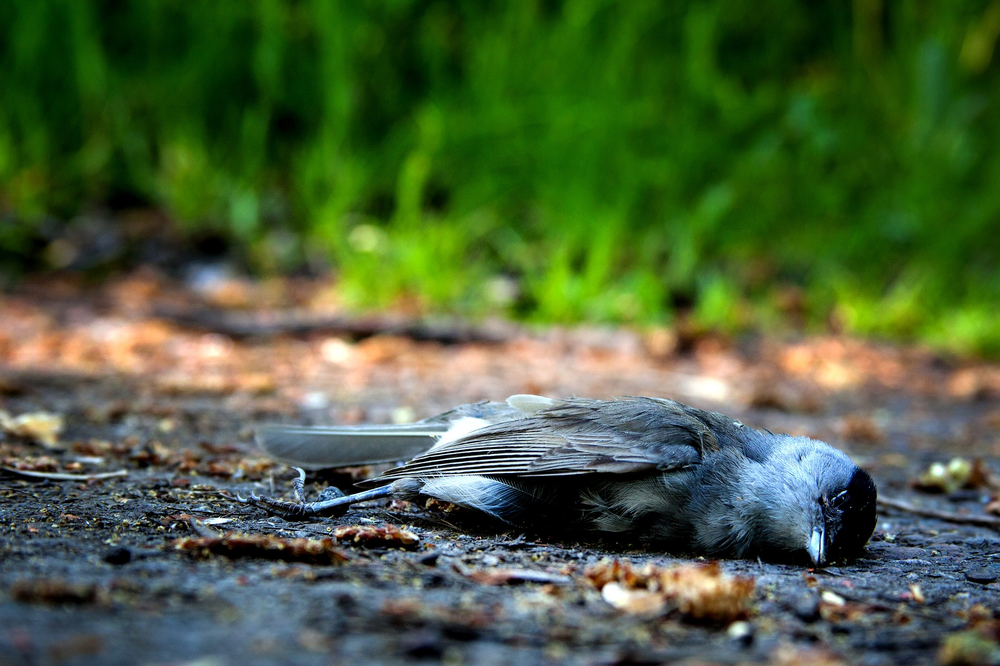

Studi Terbaru Ungkap Bagaimana 469 Spesies Burung Punah akibat Manusia!
Temuan baru yang dirilis oleh Tel Aviv University (TAU) dan Weizmann Institute of Science mengungkapkan bagaimana umat manusia telah membuat 469 spesies burung di bumi jadi punah. tudi terbaru ini menunjukkan bahwa ratusan spesies burung itu punah dengan manusia sebagai penyebab utamanya, kata TAU dalam siaran pers mereka.
Para peneliti mengatakan beberapa karakteristik signifikan membuat burung-burung itu mudah tersedia bagi manusia dan para pemburu hewan yang menangkap mereka untuk memakan mereka. Hal ini mengakibatkan kepunahan 469 spesies burung tersebut.
Dalam 20.000 hingga 50.000 tahun terakhir, sekitar 10 sampai 20 persen dari semua spesies burung telah punah, menurut studi tersebut. Laporan studi ini telah terbit di Journal of Biogeography pada 3 Juli 2021.
Studi ini dipimpin oleh Profesor Shai Meiri dari School of Zoology di George S. Wise Faculty of Life Sciences dan Steinhardt Museum of Natural History di TAU, dan Amir Fromm dari Weizmann Institute. Dalam studi ini mereka mencatat bahwa sebagian besar spesies burung yang punah itu memiliki beberapa kemiripan.
Spesies-spesies burung itu berukuran besar, mendiami pulau-pulau, dan kebanyakan dari mereka tidak dapat terbang. Para peneliti mengatakan karakter-karakter inilah membuat burung-burung tersebut mudah tersedia bagi manusia dan para pemburu hewan lainnya yang mencari mereka untuk dijadikan makanan.
Dalam studi ini, para peneliti juga menunjukkan harapan bahwa penemuan mereka ini akan membantu menghindari kepunahan burung lebih lanjut.
"Studi kami menunjukkan bahwa sebelum peristiwa kepunahan besar dalam ribuan tahun terakhir, lebih banyak burung besar, bahkan raksasa, serta tidak bisa terbang hidup di bumi kita, dan keragaman burung yang hidup di pulau-pulau jauh lebih besar daripada hari ini," ujar Shai Meiri speerti dilansir Nature World News.
Meiri mengatakan ia dan Amir Fromm berharap penemuan mereka ini dapat memainkan peran sebagai sinyal peringatan terkait spesies-spesies burung yang saat ini terancam punah. Ia juga menambahkan bahwa penting untuk mengetahui apakah burung-burung yang sedang terancam punah tersebut memiliki karakteristik yang sama.
Namun harus diakui bahwa kondisi yang mengancam kepunahan burung-burung saat ini telah sangat berubah. Sekarang, penyebab utama kepunahan spesies-spesies burung oleh manusia bukanlah akibat perburuan, melainkan perusakan habitat alami burung-burung tersebut.
Sebagai contoh, Israel memperhatikan banjir besar dari burung-burung yeng bermigrasi ke negara itu setiap tahunnya. Sejumlah besar burung kembali ke pantai Eilat mengikuti pola migrasi di pertengahan April.
Namun selama delapan tahun terakhir, jumlah burung yang tiba di Eilat, ujung paling selatan Israel itu, telah berkurang tajam. Hal ini sesuai data yang dikumpulkan oleh Pusat Penelitian dan Burung Internasional Eilat (International Birding and Research Center Eilat), yang semakin membuat para ahli khawatir bahwa tingkat kepunahan burung-burung itu makin meningkat.
Pada awal Agustus 2021 ini Menteri Perlindungan Lingkungan Israel, Tamar Zandberg, membuat pengumuman bahwa negara itu akan memperluas perlindungan satwa liar terhadap dua spesies burung.
Pemerintah Israel berencana melarang perburuan merpati penyu selama tiga tahun. Mereka juga melarang perburuan burung puyuh sepenuhnya. Para ahli berharap kebijakan ini bisa mencegah penurunan lebih lanjut yang terjadi pada populasi kedua spesies burung tersebut.
Kebijakan untuk melarang perburuan spesies burung yang terancam punah, ditambah lagi dengan melarang perusakan habitat alami burung, mungkin baik juga jika bisa ditiru oleh pemerintah Indonesia. Sebab, sampai pada pertengahan 2021, setidaknya ada 179 jenis burung di Indonesia yang masuk ke dalam daftar hewan terancam punah secara global.
Berdasarkan status keterancamannya, ada 31 jenis burung masuk dalam kategori kritis, satu langkah lagi menuju status kepunahan. Sebanyak 52 jenis lainnya dinyatakan genting (Endangered/EN). Kemudian 96 jenis lainnya berstatus rentan terhadap kepunahan (Vulnerable/VU).